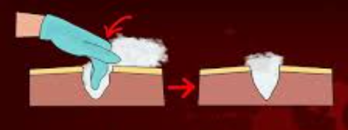
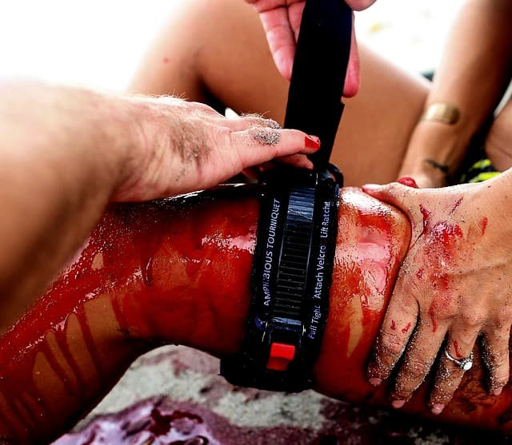
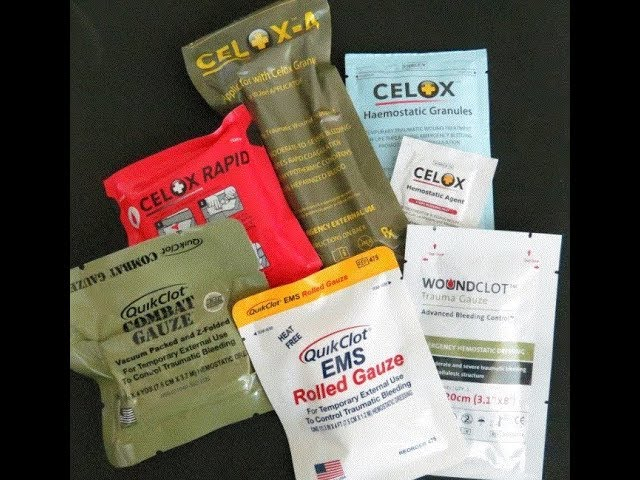
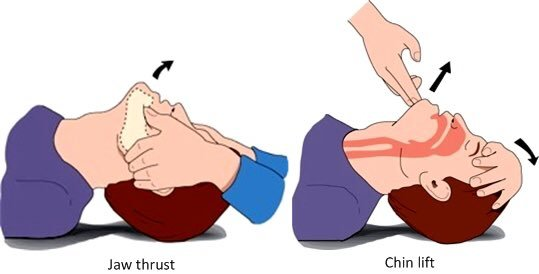
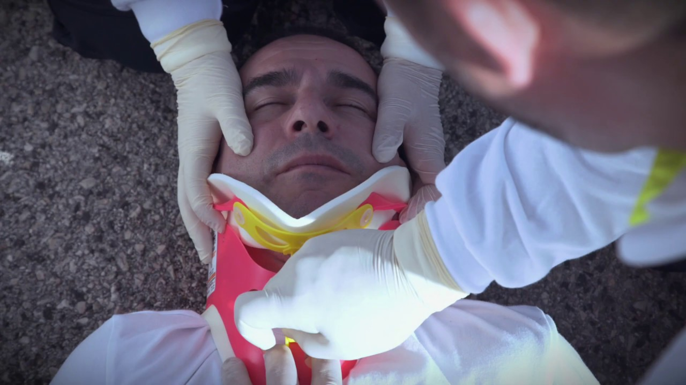

O Mneumônico XABCDE é utilizado para que o socorrista consiga prestar um atendimento mais ágil e eficaz.
Dentro do XABCDE busca-se tratar o que Mata mais Rápido, antes do que Mata mais pacientes. Também no XABCDE, nós vamos avaliar qualidade e não quantidade!
X = Hemorragias Exsanguinantes
Na letra X vamos buscar nos pacientes por Hemorragias Exsanguinantes ou Massivas. Lembrando que primeiro tratamos o que vai matar rápido essa vítima. A alta perda volêmica pode levar o paciente a óbito em questão de poucos minutos!
Dentro da letra X temos 3 tipos de Hemorragias:
-
Hemorragias Capilares: São aquelas que possuem uma cor de vermelho vivo, forte, possuem baixo fluxo ou quase nulo, é quando há uma lesão no tecido capilar (pele).

- Hemorragias Venosas: Hemorragias venosas podem possuir baixo ou médio fluxo. Possuem uma cor vermelha mais escura devido a substâncias no sangue como dióxido de carbono, amônia, ureia e outros produtos do metabolismo. Ocorrem com lesões nos vasos venosos.
-
Hemorragia Arterial: Sangramentos com alto fluxo, com jatos pulsáteis de sangue vermelho vivo. Isso se deve à alta pressão da artéria que conduz sangue rico em oxigênio diretamente do coração. Se não estancada rapidamente, pode levar à morte em até 5 minutos.

Agora vamos para as técnicas de estancamento de hemorragias. As 5 mais comuns são:
-
Pressão Direta: Com gaze, compressa ou tecido limpo, pressione o ferimento com a mão até cessar o sangramento. Utilizada para hemorragias capilares, venosas e até arteriais.

-
Curativo Compressivo: Após aplicar pressão direta, envolva a área com atadura ou bandagem, como a israelense, mantendo a pressão constante.

- Preenchimento de Feridas: Inserção de gaze estéril ou atadura dentro de feridas profundas para gerar pressão interna e conter o sangramento. 
- Torniquete: Faixa compressiva acima do local do sangramento (membros), usada para interromper temporariamente o fluxo arterial. 
- Agentes Hemostáticos: Substâncias aplicadas diretamente sobre feridas para promover coagulação rápida, eficazes quando o torniquete não pode ser usado. 
A = Vias Aéreas e Controle da Cervical
Na letra A vamos avaliar a Perviedade das vias aéreas e fazer o controle manual da cervical para evitar o agravamento de possíveis lesões.
- Vias Aéreas: Verifique se as vias estão desobstruídas. Remova secreções, sangue ou corpos estranhos. Use as técnicas de Jaw Thrust e Chin Lift para alinhar e liberar a via aérea. 
-
Controle da Cervical: Apoie manualmente a cabeça do paciente para evitar movimentos que possam agravar lesões cervicais.
Como identificar uma possível lesão cervical?
Quando há Dor ao movimentar a cabeça, Rigidez impedindo a movimentação da cervical e Hematomas na região cervical e dor à palpação. 
B = Boa Ventilação e Boa Respiração
Na letra B vamos avaliar a qualidade da Respiração do paciente.
Qual a diferença entre Respiração e Ventilação?
- Respiração: Refere-se à troca de gases em nível celular, envolvendo a absorção de oxigênio e a eliminação de dióxido de carbono (Co2) pelas células do corpo.
- Ventilação: Refere-se ao processo mecânico de movimentar o ar de fora para dentro do nosso corpo e de dentro para fora do nosso corpo.
Oque eu devo avaliar na letra B?
- Observar os movimentos torácicos: Verificar se o tórax se expande de forma simétrica e se há sinais de esforço respiratório, como uso de musculatura acessória (músculos do pescoço ou intercostais).
- Verificar a frequência respiratória: Avaliar se está Normal, acelerada ou lenta.
- Procurar sinais de hipóxia: Observar cianose (coloração azulada na pele, lábios ou unhas) ou outros indicadores de baixa oxigenação.
- Inspecionar desvios anatômicos: Identificar desvio de traqueia, que pode indicar pneumotórax hipertensivo, ou outras anormalidades, como fraturas de costela ou tórax instável.
Exposição do Torax
Para realizar a avaliação, é necessário expor o tórax do paciente, removendo roupas com cuidado para evitar movimentação excessiva, especialmente em casos de suspeita de lesões na coluna.
Identificar e tratar problemas respiratórios
- Pneumotórax hipertensivo: Identificado por ausência de sons respiratórios em um lado do tórax, desvio de traqueia e dificuldade respiratória grave; pode exigir descompressão com agulha (SAV).
- Hemotórax maciço: Acúmulo de sangue no espaço pleural, que compromete a ventilação.
- Pneumotórax aberto: Ferimento torácico que permite entrada de ar, tratado com curativo oclusivo de três lados.
- Tórax instável: Múltiplas fraturas de costelas que causam movimentação paradoxal do tórax, exigindo estabilização e suporte ventilatório.
C – Circulação
A letra C refere-se a "Circulation" (circulação, em inglês) e corresponde à etapa de avaliação e manejo da circulação sanguínea e controle de hemorragias. Essa fase foca em identificar e tratar perdas sanguíneas significativas e garantir a perfusão adequada dos órgãos vitais.
O que envolve a letra C no XABCDE?
Dentro da letra C o socorrista deve checar o H e os 4 Ps
- Hemorragias: Na letra C deve se buscar por pequenas hemorragias, e assim que identificada, estancalas de imediato.
- Pulso: Deve-se checar o pulso do paciente avaliando dois pontos principais: o pulso radial, localizado na parte interna do punho, e o pulso carotídeo, encontrado na lateral do pescoço.
O socorrista deve observar:
- Frequência: se o pulso está lento (bradicardia) ou acelerado (taquicardia);
- Força: se é forte ou fraco
- Ritmo: se é regular (rítmico) ou irregular (arrítmico)
- Pele: Deve-se observar atentamente as características da pele do paciente, verificando:
- Cor: se está pálida, avermelhada, arroxeada ou com coloração normal
- Temperatura: se a pele está quente, fria ou morna;
- Umidade: se está seca, úmida ou pegajosa.
- Palpação: A palpação aqui é usada para identificar sinais de sangramento externo ou interno, principalmente hemorragias que podem colocar a vida do paciente em risco imediato. O socorrista palpando a área busca por:
- Sangramento ativo (sangue saindo visivelmente)
- Hematomas ou inchaço que indiquem sangramento interno
- Fraturas que podem causar hemorragias internas graves
Como fazer a palpação?
Use as pontas dos dedos e a palma da mão:
- Comece com toque leve e depois aumente a pressão gradualmente para sentir melhor os sinais.
- A palpação deve ser sistemática e cuidadosa para não causar dor ou agravar lesões.
Observe reações do paciente:
- Se ele sente dor localizada, pode indicar lesão ou hemorragia naquele ponto.
- Verifique se há edema (inchaço), rigidez ou deformidade.
Procure sinais indiretos:
- Temperatura da pele: pele fria pode indicar má perfusão causada por sangramento.
- Pulsação: sentir pulsos periféricos (ex: pulso radial, femoral) para avaliar a circulação.
Onde fazer a palpação?
Na etapa C, a palpação deve focar principalmente nas áreas com risco alto de sangramento grave:
- Região do pescoço: para detectar hematomas ou sangramentos no local, além de verificar pulsos carótidos.
- Tórax: para identificar possíveis ferimentos penetrantes ou hematomas.
- Abdômen: área onde sangramentos internos são comuns em traumas; a palpação pode revelar dor intensa ou rigidez.
- Pelve: para detectar instabilidade ou dor que sugira hemorragia interna.
- Membros superiores e inferiores: verificando sangramentos externos, deformidades, e pulsos periféricos.